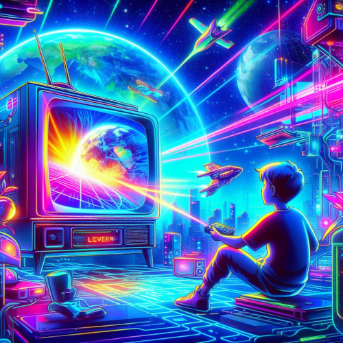

No GeekVerse, a paixão pelos games é evidente em cada detalhe. Nossa equipe de entusiastas está sempre à procura das últimas novidades, análises detalhadas e insights valiosos para manter você atualizado e bem informado. Se você está procurando por resenhas honestas, dicas e truques, ou apenas quer saber o que há de mais recente no mundo dos jogos, você veio ao lugar certo.
Aqui no GeekVerse exploramos o vasto universo dos jogos, filmes e séries com paixão e profundidade. Desde análises detalhadas e resenhas honestas até recomendações personalizadas, nosso site oferece uma cobertura abrangente para entusiastas de todas as formas de entretenimento. Junte-se a nossa comunidade vibrante para participar de discussões animadas, compartilhar insights e descobrir novas gemas em meio à riqueza da cultura pop. Seja você um gamer ávido, um cinéfilo apaixonado ou um viciado em maratonas de séries, GeekVerse é o seu destino definitivo para explorar, aprender e se conectar com outras mentes criativas e apaixonadas como a sua.
No GeekVerse, também mergulhamos fundo nos mundos cinematográficos e televisivos, fornecendo análises aprofundadas, críticas honestas e recomendações personalizadas para garantir que você esteja sempre por dentro do que há de melhor para assistir. Se você está procurando por insights sobre os filmes indicados ao Oscar, as séries mais comentadas do momento ou simplesmente quer descobrir uma nova joia escondida, nós temos tudo aqui para você.
